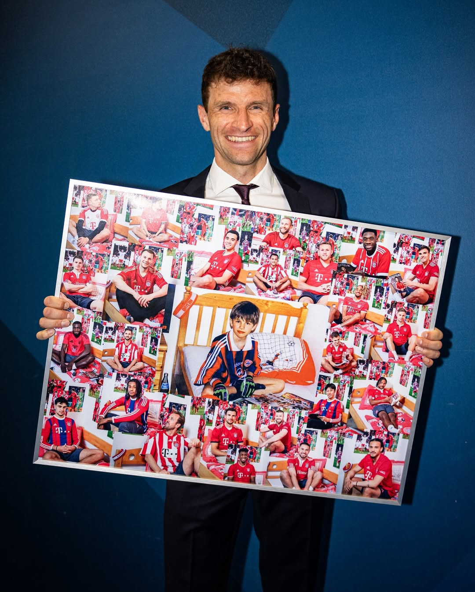
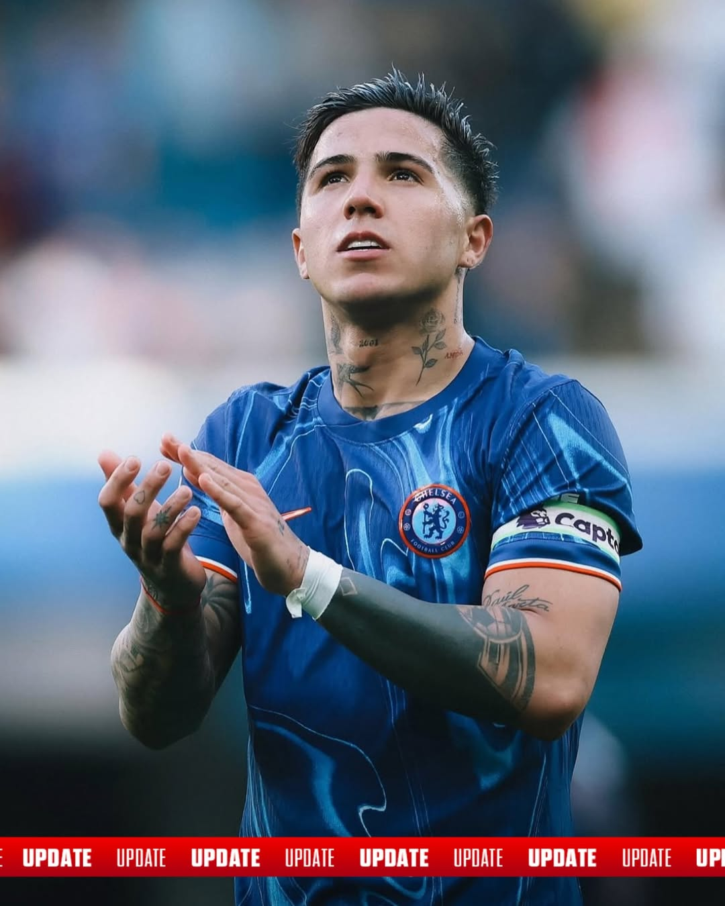
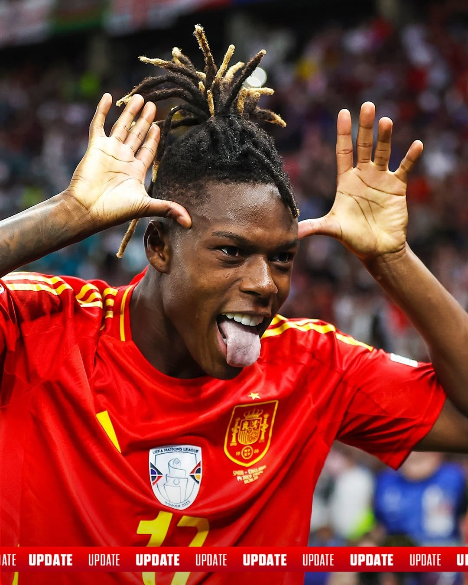
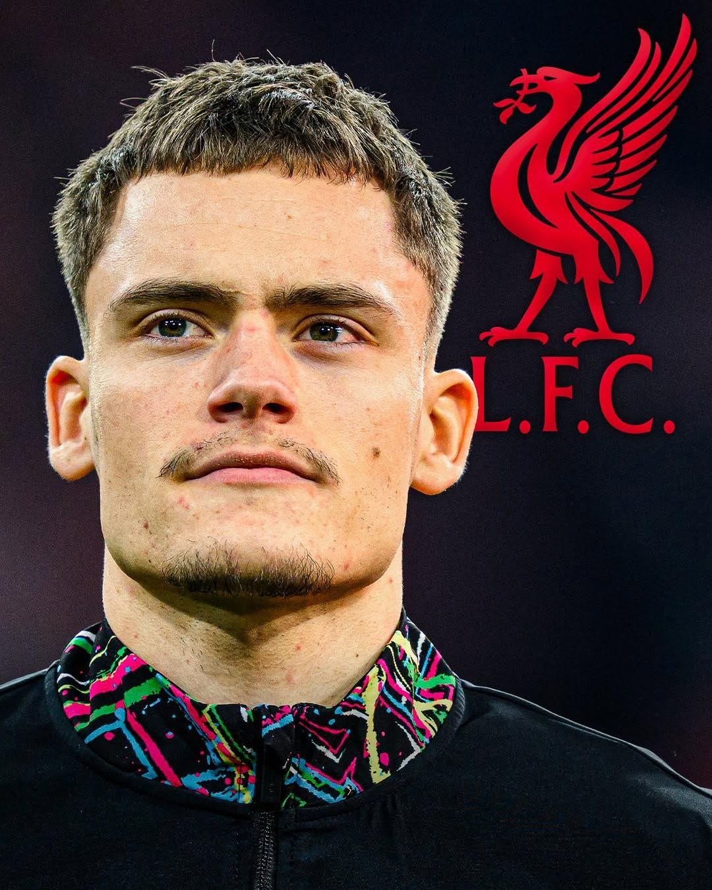
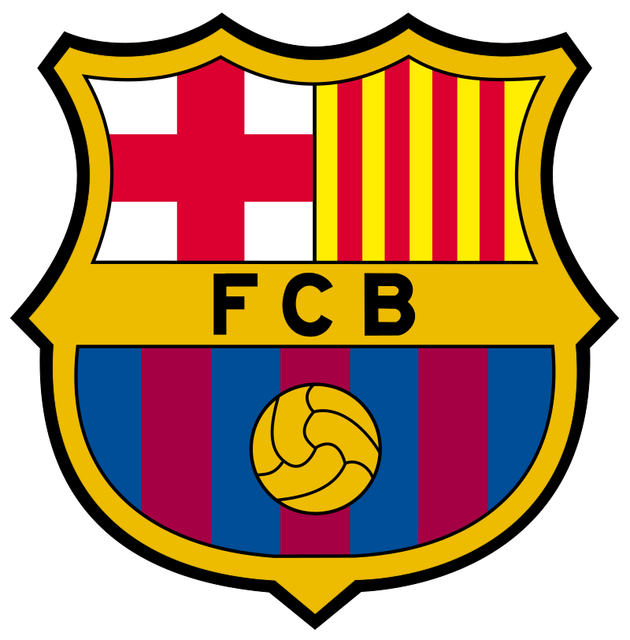
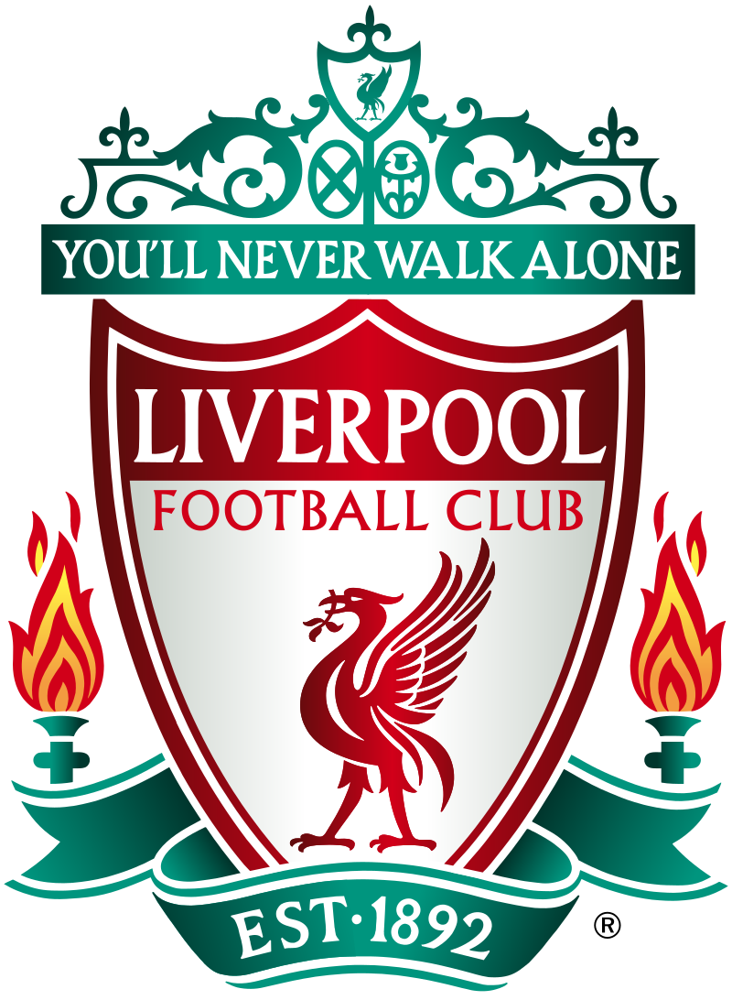
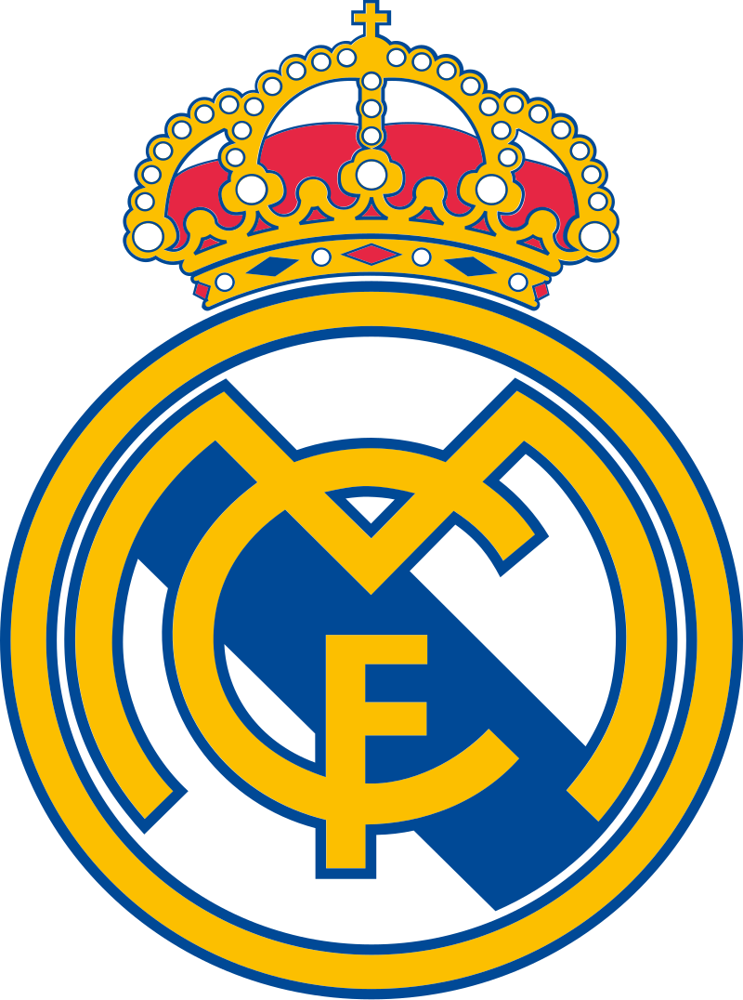
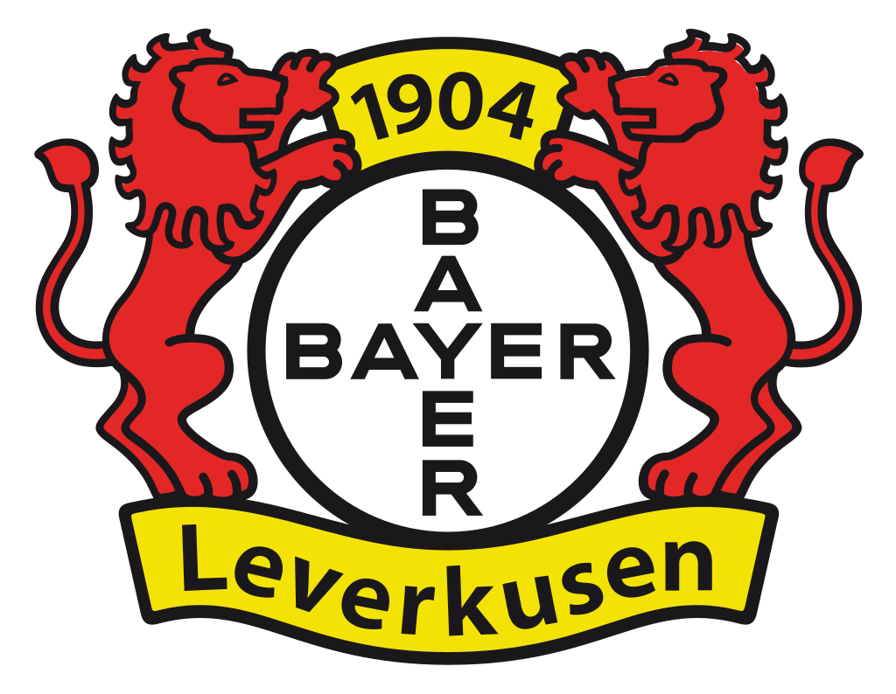
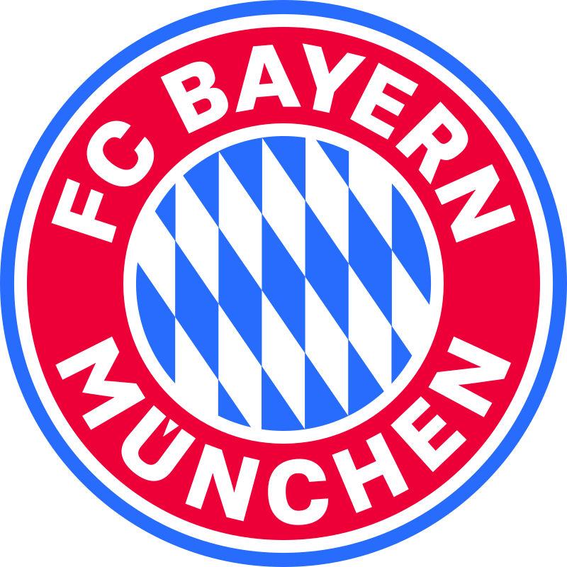

Here We Go Football News and Transfers
Football News

Good Bye Luka Modrić

Muller Bids Farewell

FC Barcelona Wins La Liga

Napoli Wins the Scudetto

Spurs Win the Europa League

Galatasaray S.K Wins the Turkish League

Pichichi Trophy Race

Manchester City Wins
Transfer News
Álvaro Carreras To Real Madrid CF

Álvaro Carreras Signs a 5 year deal with Real Madrid. Deal set to be signed with Benfica for a fee of 50m euros
Read MoreAnsu Fati to Monaco - Deal Almost Done

Negotiations are at the final stage as Monaco close in on Barcelona's Ansu Fati.
Read MoreMan United Interested in Matheus Cunha

Manchester United are exploring a move for Wolves’ Brazilian forward Matheus Cunha.
Read MoreChelsea Not Selling Enzo Amid Real Madrid Links

Despite interest from Madrid, Chelsea have no intention of letting Enzo Fernandes go.
Read MoreReal Madrid Target Nico Williams

Los Blancos are keen on signing the Athletic Bilbao winger this summer.
Read MoreJonathan Tah to Bayern – Deal Done

Bayern Munich have completed the signing of defender Jonathan Tah from Leverkusen
Read MoreLeverkusen Eye Ten Hag as Alonso Replacement

With Xabi Alonso set to leave, Leverkusen are considering Erik ten Hag for the managerial role.
Read MoreFlorian Wirtz Likely Heading to Liverpool

Liverpool have joined the race and agreed personal terms with Wirtz, making them front-runners for the transfer.
Read MorePlayer and Club Ranking
Top 5 clubs
-
1.
 Paris Saint-Germain
Paris Saint-Germain
-
2.

FC Barcelona -
3.

Liverpool FC -
4.
 FC Internazionale Milano
FC Internazionale Milano
-
5.
 Arsenal FC
Arsenal FC
Top 5 Forwards
-
1.
Ousmane Dembélé
- 2. Rapinha
-
3.

Kylian Mbappé - 4. Lamine Yamal
- 5. Mohamed Salah
Top 5 Midfielders
- 1. Pedri
- 2. Federico Valverde
-
3.

Florian Wirtz -
4.
Nicolò Barella
-
5.
João Neves
Top 5 Defenders
- 1. Virgil van Dijk
-
2.
Alessandro Bastoni
-
3.
William Saliba
- 4. Pau Cubarsí
-
5.
Willian Joel Pacho
Top 5 Goal Keepers
- 1. Thibaut Courtois
-
2.
Gianluigi Donnarumma
-
3.
Yann Sommer
-
4.

Manuel Neuer - 5. Wojciech Szczęsny

About Me
Ciao! I'm Fabrizio Romano, a football journalist born in Naples, Italy, on February 21, 1993. I’ve always been passionate about the beautiful game, and I turned that passion into a career in football transfer reporting.
My journey started in 2009, and things really took off when I broke the news about Mauro Icardi's move from Barcelona. Since then, I’ve worked with Sky Sport Italy, The Guardian, and CBS Sports, sharing reliable transfer news with fans across the world.
You might know me for my catchphrase — "Here we go!" — which I use to confirm transfer deals. It’s become a global signal that something big is happening in football.
I’m grateful to have been recognized with awards like Best Football Journalist at the Globe Soccer Awards, and I was even named in Forbes’ 30 Under 30 in media and marketing. I speak Italian, English, Spanish, and Portuguese to stay connected with sources and fans around the world.
Outside of journalism, I'm also a big fan of Watford FC. Thank you for following my work and joining me on this amazing football journey.